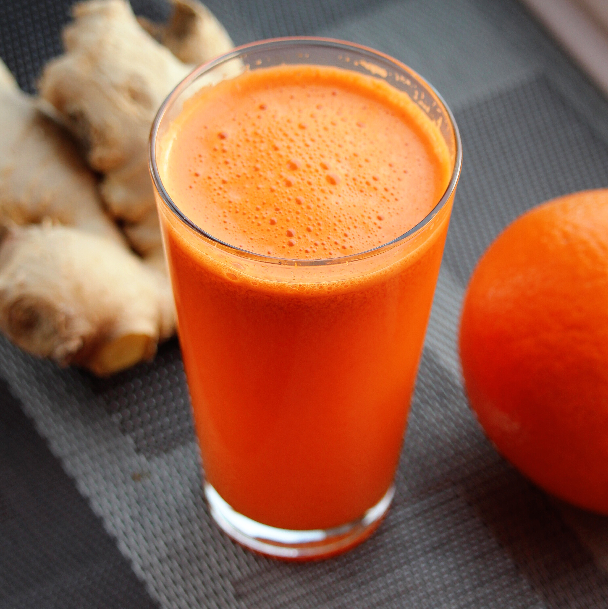

Orange Zinger

- Prep:10 mins
- Total:10 mins
- Servings:1
Ingredients
- ½ inch piece fresh ginger root
- 1 pound carrots, scrubbed and trimmed
- 2 oranges, peeled
Directions
Step
- Juice ginger, carrots, and oranges in a juicer, respectively. Serve immediately.
Per Serving:188 calories; protein 4.3g; carbohydrates 44g; fat 1.1g; sodium 313.6mg. Full Nutrition